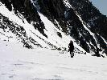
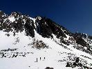
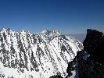

Marcové Tatry
2012 · Slovensko, Vysoké Tatry
Marcové Tatry 2012
Nie je streda ako streda. Sú štyri hodiny ráno, všetci normálni ľudia ešte spia. Ja však už sedím v aute a smerujem k Horárovi. Následne diaľnicou k Piešťanom, kde k nám nasadá Lubo a v Novom Meste aj Ivan. Po dlhom čase sa do horcovej akcie pripája teda aj Lubo, ktorý si minulý rok míňal dovolenku v Havajskom raji. To si niekto žije, že Lubo J.
Auto je naložené zimnou lezeckou výzbrojou a vezie nás smer Vysoké Tatry. Prvá tatranská zastávka je na Štrbskom Plese. Ľahké raňajky a už aj smerujeme do Furkoty. Na Solisko sa vyvážame približovadlom. Lanovka, chceme ušetriť čas. To sa nám aj darí, a tak sa do reality dostávame až na chate pod Soliskom J
Stačí pol hodinka čľapania a sme vo Furkotskej doline. Zdola hodnotíme snehovo-ľadovo-lezecké podmienky v žľaboch vedúcich na Soliská. Voľba padá na Štrbské Solisko. Je to v snehová túra so 60 stupňovým sklonom a na spestrenie sú tu ešte dva kameno-ľadové prahy. Hoci je krásný slnečný deň, slnko nám tu moc neubližuje, hodnú časť výstupu sme totiž v tieni. Výstup zvládame bez väčšieho závahania a tak sme bez problémov na vrcholovom hrebeni.
V gýčovom počasí sa kocháme krásnymi výhľadmi. Na západe je to dominujúci Kriváň a na východe protiľahlý hrebeň Bášt a ďalej aj Gerlach.
Po ľahkom občerstvení, zostupujeme do Soliskového sedla a odtiaľ zatočíme doľava, smer do Mlynická dolina. Zo sedla už lavíny pred časom popadali a tak zostup je bezpečný. Na turistický chodník sa pripájame pod vodopádom Skok. Ešte hodinku a pol a sme pri aute. Následuje presun do Smokovca, peší výstup na Hrebienok a ďalej na Zamku. Ja nádherný spln a tak nemusíme zapínať ani čelovky.
Na chate je iba pár hostí a časť večera trávime romanticky, pri petrolejkách. V hojných množstvách dopĺňame stratené kalórie a samozrejme aj tekutiny. Ani sa niet čo čudovať, od rána sme riadne nejedli.
S Lubom z chaty spomíname na nezabudnuteľného Silvestra. Horcoví kamaráti ma obdarúvajú asi metrovou Horárom vyrezávanou varechou. Tento ktorý ma pekne ošmekol, keď som sa ho pýtal čo to nesie. Hovoril, že snehové skoby najnovšieho typu. J





Po raňajkách sa presúvame do Veľkej studenej doliny, naším cieľom je výstup na Prostredný hrebeň niektorým zo zľabov. Po zhodnotení situácie a podmienok padá voľba na žľab končiaci nad sedlom za Oštepmi. Presun z chodníka pod žľab je nad očakávanie dobrý, sneh je pomerne tvrdý takže sa ani moc neboríme. Asi 200 metrov pod ústím žľabu, pri občerstovacej prestávke sa mne “šikovnému“ chlapcovi sa vyšmykla termoska z ruky a letí a letí a letí. Sto metrov pod nami je les a tak dúfam, že sa aspoň tam zastaví. Prianie sa stáva skutočnosťou a za chvíľu, ju za Horárovej asistencie, aj nachádzame.
Hneď prvá dľžka v ľade nám dáva riadne zabrať. Žľab sa následne trocha položí a niekolko dĺžok ideme viacmenej súbežne. Cesta do sedla odbáča doprava, nás čaká druhý ľadový prah. Tento je o poznanie ľahší ako prvý, slnko už aj do neho dobre pečie, tak. Ešte tri dĺžky priebežne a sme na hrebeni.
Po diskusii volíme zostup do Malej studenej doliny, s vierou že podmienky budú dobré. Časom sa ukazuje, že je to super voľba a za chvíľu sme na turistickom chodníku k Zamke. Zhadzujeme laná a balíme aj mačky a sedáky.
Ivan vyvíja veľkú snahu o strávenie daľšej noci na chate: Jeho snaha však nenachádza kladnú odozvu v mužstve a tak na Zamke pribalíme ostatné veci a už nocou zostupujeme na Hrebienok.
Nekonečná cesta s medzispristátim v Novom Meste a Banke a o jednej hodine nočnej sme aj v perle na Dunaji.
Je piatok ráno a o pol ôsmej som už v práci a opäť riešim, ktorým smerom treba točiť zemeguľu J


Dušan
Viacej fotografii na Picasawebe
Pôvodná stránka: archív horecsport.sk